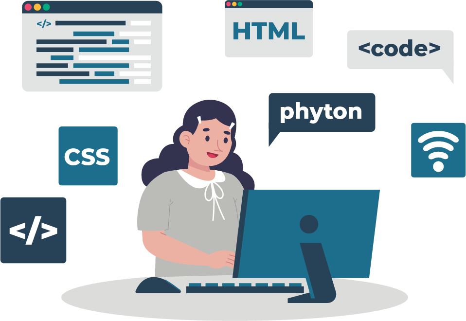

Le sport est une activité importante pour moi. J'ai pratiqué de la danse pendant de longues années, puis j'ai fait du badminton et maintenant, je me consacre à la course à pied depuis 2 ans. Cela me permet de me vider la tête et de passer du temps avec mes amis et ma famille. Même si j'ai dû quitter mon club lorsque je suis venue à Angers pour mes études, je continue à me porter bénévole les week-ends pour les aider sur les différents évènements.
Le domaine du développement et de la programmation m'intéressent énormément. Cette passion est née avec Scratch au collège (logiciel éducatif avec son propre langage de programmation). Ces cours m'ont tout de suite beaucoup plus, c'est pourquoi j'ai fait mon stage de 3ème chez Hexanet, une entreprise qui crée en partie des sites web. Durant cette semaine, j'ai pu découvrir les bases du HTML et du CSS ainsi que PhotoShop. Ce stage m'a conforté dans l'idée de devenir développeuse et ce depuis maintenant 5 ans.
Le football est un sport qui m'intéresse depuis quelques années car il a toujours été très présent dans ma famille. Certes, je ne le pratique pas mais j'aime suivre les différents championnats et regarder les matchs des équipes que je supporte. Ce sport permet de faire ressortir ma loyauté car peu importe la forme du club que je soutiens, je ne cesserai pas de croire en lui. Par ailleurs, ce que j'apprécie particulièrement, c'est que le football est un sport universel qui a le pouvoir de réunir les gens, toutes générations confondues, comme nous avons pu le constater lors de la Coupe du Monde.